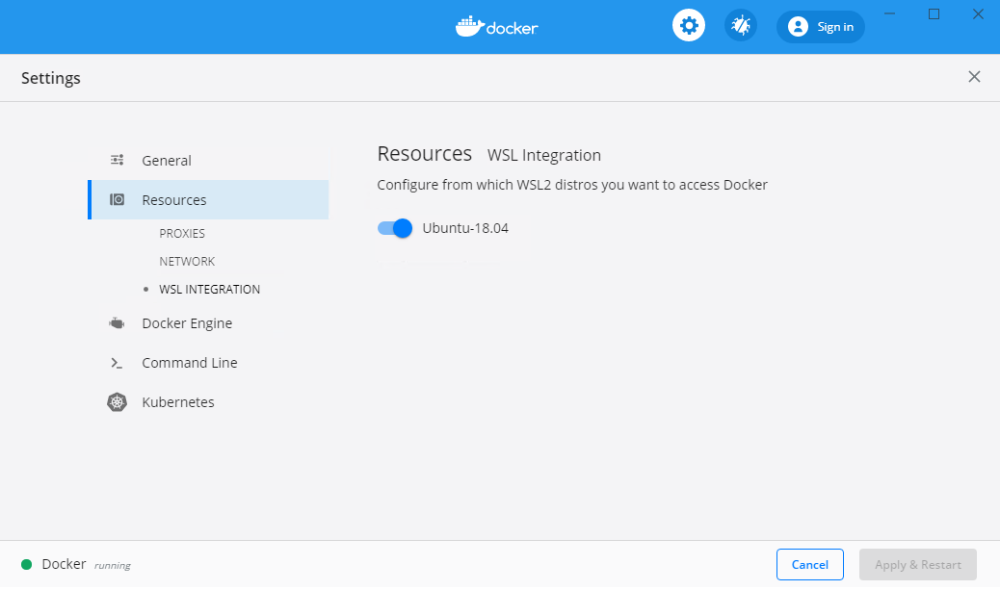
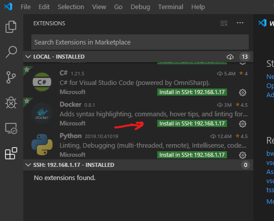

Your development environment
You can choose whether to develop a container-based service in the local environment, or in a remote environment. The local environment is the operating system of your developer workstation; using the local environment means you build and run your service container(s) using Docker installed on your workstation. Docker is supported on Windows, macOS, and various Linux distributions; for system and hardware requirements, refer to Docker installation page.
A remote development environment is different from your developer workstation. It can be a remote machine accessible via SSH, a virtual machine running on your developer workstation, or a development container. A remote environment can have advantages over the local environment, the main one being the ability to use the same operating system during development, and when your service is running in production. To use a remote environment, you need to ensure that docker command (Docker CLI) is available and functional within that environment.
The second important choice is whether to debug your service running as an ordinary process, or debug your service running in a container.
Guidelines for choosing a development environment
Use the local environment when you are not concerned about:
- Using the same OS for development and inside the service container.
- Installing necessary tools and dependencies on top of your local environment.
Consider using a development container first, if you need a remote environment.
- On Windows, using Windows Subsystem for Linux (WSL) is good option.
Debugging your service running in a container is possible, but brings additional complexity. Use normal debugging by default, and debugging in the container when you need it.
The Docker extension natively supports container debugging for .NET-, Node.js-, and Python-based services.
Enabling Docker CLI inside a remote development environment
The way to enable Docker CLI inside a remote development environment varies depending on the type of remote environment you choose.
Development container
For a development container, you should redirect the Docker CLI inside the container to the Docker daemon running on the local machine.
First, make sure Docker CLI is installed into your development container. The exact steps depend on the Linux distribution the container is using.
Here is an example for Ubuntu-based distros (from a .devcontainer/Dockerfile):
...
&& apt-get -y install software-properties-common \
&& curl -fsSL https://download.docker.com/linux/ubuntu/gpg | apt-key add - 2>/dev/null \
&& add-apt-repository "deb [arch=amd64] https://download.docker.com/linux/ubuntu bionic stable" \
&& apt-get update -y \
&& apt-get install -y docker-ce-cli \
&& apt-get install -y python python-pip \
&& pip install docker-compose \
...
Next, ensure that Docker socket is mapped into the development container (in .devcontainer/devcontainer.json):
...
"runArgs": [ "-v", "/var/run/docker.sock:/var/run/docker.sock"]
...
Windows Subsystem for Linux
Windows Subsystem for Linux represents a great choice for container-based service development on Windows. Windows Subsystem for Linux version 2 (WSL 2) is strongly recommended. Docker Desktop for Windows has been updated to work with WSL 2 and has a graphical setting to enable Docker CLI inside WSL 2 distribution(s):

To use WSL 2 for Docker development you will need Windows 10 version 2004 or newer, and Docker Desktop for Windows version 2.2.0.5 or newer.
The old version of WSL (WSL 1) does not provide an easy way to connect to the Docker daemon on the host.
Remote machine
The recommended way to enable container development with a remote machine is to do a full Docker installation on the machine, including Docker daemon.
Note: Docker Desktop product is supported only on physical Windows and macOS machines, not virtual machines. If you want to use a virtual machine as a remote development environment, we recommend to use a Linux VM with Docker Engine.
After Docker is installed and working on the remote machine, you can use VS Code's Remote - SSH extension from the Remote Development extension pack to connect to your remote machine and work there.
Open VS Code Command Palette (
kb(workbench.action.showCommands)) and run command Remote-SSH: Add new SSH host.... Follow the prompts to set up a connection to the target host.Run command Remote-SSH: Connect to host... and connect to the host.
A new VS Code window opens, running in the context of the target machine. If you're using password authentication, the password will be prompted here. We strongly recommend that you set up SSH key authentication, for ease of use.
In the Extensions view, install the Docker extension (on the remote host) (a reload may be required after this step):

NOTE: If you are using the Docker extension to build Docker images and have source code, the approach above probably means you have your source enlistment on the remote host, rather than on your developer workstation. If you are just using the Docker extension for the Docker Explorer features, then you can disregard this.
Local Linux VM
To use a Linux virtual machine running on your developer workstation, you should install Docker on the VM in the same way as you would install it on a remote machine, and use the VS Code Remote-SSH extension to connect to the VM.
Alternatively, you can install just the Docker CLI inside your development environment and point the CLI to the Docker host (engine) running on the developer workstation using the Docker context mechanism. The main concern with this approach is to ensure network connectivity from the VM to the Docker engine on the host, and to do so in a secure way. One option is to use SSH tunneling to the developer workstation. Another option is to have the Docker engine listen on an HTTPS port. You need to be proficient with SSH and public-key infrastructure (PKI) to use the host Docker engine from the Docker CLI running inside the VM. For most users, we recommend full Docker installation inside the virtual machine.
Debugging in a container
The Docker extension supports debugging .NET Core-based and Node.js-based services running inside a container. Other programming languages are not supported at this time.
Debugging in a container may be harder to set up than regular debugging because a container is a stronger isolation mechanism than a process. In particular:
- The debug engine running inside VS Code process needs to communicate with the service process being debugged. In the case of a service running inside a container, this implies network communication via a common network (typically Docker host network). The container needs to have appropriate ports exposed via the Docker host network for the debug engine to connect to the service process (Node.js), or debugger proxy running inside the container (.NET Core).
- Source file information generated during build time is valid in the context of the build environment (where VS Code is running). The container filesystem is different from the build environment filesystem, and paths to source files need to be re-mapped in order for the debugger to display correct source file when a breakpoint is hit.
Because of the concerns above, it is generally recommended to use regular debugging, and employ debugging in a container when necessary.
For more information about how to set up debugging inside a container see ASP.NET Core quickstart, Node.js quickstart, and Docker extension task properties (docker-build and docker-run tasks).
Next steps
Read on to learn more about